Exploring plasticity divergence with yestract-defined regulons
load("data_files/FinalDataframe3Disp.RData")
load("data_files/Cleaned_Count_Data.RData")
load("data_files/Cleaned_Counts.RData")
load("data_files/Cleaned_Counts_Allele.RData")
sapply(c("Matrix", "stringr", "ComplexHeatmap"), require, character.only=TRUE)## Matrix stringr ComplexHeatmap
## TRUE TRUE TRUEsource("functions_for_figure_scripts.R")
library(dplyr)
library(igraph)Before beginning, check that commonly-named functions are associated with the expected package:
environmentName(environment(select)) # should be dplyr## [1] "dplyr"environmentName(environment(degree)) # should be igraph## [1] "circlize"Making the gene list we’ll use as the regulation targets we put into yeastract (the regulators are all Scer regulators)
# Making one shared gene idx list
idxs <- rownames(counts)
grep("/", idxs, value = TRUE) # paralog pairs with too similar sequence ## [1] "YDR012W/YBR031W"
## [2] "YPL090C/YBR181C"
## [3] "YDR025W/YBR048W"
## [4] "YDR343C/YDR342C"
## [5] "YAR071W/YHR215W"
## [6] "YLR036C/YIL089W"
## [7] "YNL336W/YFL062W"
## [8] "YOR390W/YPL279C"
## [9] "YPL280W/YOR391C"
## [10] "YNL332W/YFL058W"
## [11] "YIL172C/YOL157C/YJL221C"# need to have separate rows for yeastract:
idxs <- map(idxs, \(g) {
if (grepl("/", g)) {
g <- strsplit(g, split = "/") |> unlist()
}
return(g)
}) |> unlist() |> sort()
write_delim(tibble(gene_name = idxs),
delim = "\n", file = "data_files/yeastract_genes.txt",
col_names = FALSE)Table downloaded from yeastract containing names of genes in common and systematic format, used to convert between formats below:
# reading in table to convert from common to systematic names
yeastract_lookup <- read_delim("data_files/downloaded_genomes_and_features/yeastract_orftogene.csv",
delim = ";", col_names = c("common_protein",
"systematic",
"common"))## Warning: One or more parsing issues, call `problems()` on your
## data frame for details, e.g.:
## dat <- vroom(...)
## problems(dat)## Rows: 7135 Columns: 5
## ── Column specification ──────────────────────────────
## Delimiter: ";"
## chr (5): common_protein, systematic, common, X4, X5
##
## ℹ Use `spec()` to retrieve the full column specification for this data.
## ℹ Specify the column types or set `show_col_types = FALSE` to quiet this message.yeastract_lookup$description <- select(yeastract_lookup,
setdiff(colnames(yeastract_lookup),
c("common_protein",
"systematic",
"common"))) |>
apply(MARGIN = 1, \(x) reduce(x, .f = paste0)) |> as.character()
yeastract_lookup <- select(yeastract_lookup,
common_protein,
systematic,
common,
description)
# removing duplicate rows
yeastract_lookup[duplicated(yeastract_lookup$common_protein),] # 2 duplicates## # A tibble: 2 × 4
## common_protein systematic common description
## <chr> <chr> <chr> <chr>
## 1 Uncharacterizedp tT(XXX)Q2 tT(XXX)Q2 NANA
## 2 Rdn25-2p 26S rRNA RDN25-2 NANAyeastract_lookup <- yeastract_lookup[!duplicated(yeastract_lookup$common_protein),]Reading in regulatory matrices from yeastract
Regulators are rows Targets are columns i,j = 1 means i regulates j (could be positive or negative or both depending on regulatory matrix used) i,j = 0 means there is no evidence that i regulates j
Function to streamline reading in each matrix, given its file location
# reading in matrices
readInRegulatoryMatrix <- function(.file_name) {
matdf <- read_delim(.file_name,
delim = ";")
mat <- matdf[, -1] |> as.matrix()
colnames(mat) <- left_join(tibble(common = colnames(mat)),
yeastract_lookup, by = "common") |>
select(systematic) |> pull()
rownames(mat) <- left_join(tibble(common_protein = unlist(matdf[,1])),
yeastract_lookup, by = "common_protein") |>
select(systematic) |> pull()
return(mat)
}Reading in the un-stressed regulator matrix:
# setting file suffix to determine which matrix type
# file_name_suffix <- "_directOrExpression.csv" # Binding OR expression regulatory matrices
file_name_suffix <- "_bindingANDexpression.csv" # Binding AND expression regulatory matrices
# file_name_suffix <- "_Activators_directAndExpression.csv" # Binding AND expression regulatory matrices, positive results on expression only
# No-stress control matrix
ypd <- readInRegulatoryMatrix(.file_name = paste0("data_files/yeastract/Control",
file_name_suffix))## Rows: 7135 Columns: 5075
## ── Column specification ──────────────────────────────
## Delimiter: ";"
## chr (1): 5074
## dbl (5074): TFC3, VPS8, EFB1, SSA1, ERP2, FUN14, S...
##
## ℹ Use `spec()` to retrieve the full column specification for this data.
## ℹ Specify the column types or set `show_col_types = FALSE` to quiet this message.unique(as.vector(ypd)) # binary matrix## [1] 0 1Reading in all environment-specific regmats:
Our full list of regmats:
regmats <- list("YPD" = ypd, "HAP4" = hap4,
# "HAP4_up" = hap4_activators,
# "HAP4_down" = hap4_inhibitors,
"CC" = cc, "LowN" = lown, "LowPi" = lowpi,
"Heat" = heat, "Cold" = cold)Filtering out unused regulators
# filtering out any regulators (rows) with zero counts in all
# environments and not included in the targets (columns)
zero_count_elements <- rownames(ypd)[rowSums(purrr::reduce(regmats, .f = cbind)) == 0]
sum(zero_count_elements %in% colnames(ypd))## [1] 4931sum(!(zero_count_elements %in% colnames(ypd)))## [1] 2052toRemove <- setdiff(zero_count_elements, colnames(ypd))
regmats <- map(regmats, .f = \(x) {x[setdiff(rownames(x), toRemove),]})Making regmats square
# filtering out zero count regulators made rows/columns nearly identical
# but there are still a few non-zero regulators that aren't found in columns
# checking for any genes missing from idxs that have network connections
setdiff(rownames(regmats$YPD)[rowSums(regmats$YPD) > 0], idxs) # YER109C = FLO8, YLR256W = HAP1, YOL028C = YAP7 all unannotated b/c of large sequence differences between Scer and other saccharomyces## [1] "YCR106W" "YDR123C" "YER109C" "YGL254W" "YHR124W"
## [6] "YLR013W" "YLR256W" "YOL028C" "YOR113W" "YPL248C"
## [11] "YJL056C"# how many connections are we missing?
rowSums(regmats$YPD[!(rownames(regmats$YPD) %in% colnames(regmats$YPD)),]) # 1% is acceptable## YCR106W YER109C YGL254W YHR124W YLR013W YLR256W
## 1 30 4 138 3 46
## YOL028C YOR113W YPL248C
## 12 6 14### making regulator matrices square
regmats <- map(regmats, \(x) {
common_idxs <- colnames(x)
out_mat <- x[common_idxs, common_idxs]
return(out_mat)
})Removing unconnected nodes
# genes with no in or out edges in any environment
zero_count_rows <- rownames(regmats$YPD)[rowSums(purrr::reduce(regmats, .f = cbind)) == 0]
zero_count_cols <- colnames(regmats$YPD)[colSums(purrr::reduce(regmats, .f = rbind)) == 0]
zero_count_genes <- intersect(zero_count_rows, zero_count_cols)
length(zero_count_genes)## [1] 1803regmats <- map(regmats, \(x) {
out_mat <- x[setdiff(rownames(x), zero_count_genes),
setdiff(colnames(x), zero_count_genes)]
return(out_mat)
})Visualizing Networks
How many regulatory connections are found in both each environment and YPD?
# creating regdf, each regulator (non-zero rowSum in at least one environment),
# sum and list of its targets, environments it's active in
regdf <- map2(regmats, names(regmats), .f = \(x, y) {
x_regulators <- rownames(x)[rowSums(x) != 0]
outdf <- map(x_regulators, \(r) {
targets <- colnames(x)[x[r,] != 0]
return(tibble(regulator = r,
target = targets,
environment = y))
}) |> purrr::reduce(.f = bind_rows)
return(outdf)
}) |> purrr::reduce(.f = bind_rows) |>
# adding regulator descriptions
left_join(select(yeastract_lookup, systematic, common, description),
by = c("target"="systematic")) |>
dplyr::rename(c("target_description"="description",
"target_common"="common")) |>
left_join(select(yeastract_lookup, systematic, common, description),
by = c("regulator"="systematic")) |>
rename(c("regulator_description"="description",
"regulator_common"="common"))
regdf## # A tibble: 15,897 × 7
## regulator target environment target_common
## <chr> <chr> <chr> <chr>
## 1 YAL051W YAR071W YPD PHO11
## 2 YAL051W YBR126C YPD TPS1
## 3 YAL051W YBR135W YPD CKS1
## 4 YAL051W YDL070W YPD BDF2
## 5 YAL051W YDR072C YPD IPT1
## 6 YAL051W YDR077W YPD SED1
## 7 YAL051W YDR207C YPD UME6
## 8 YAL051W YDR256C YPD CTA1
## 9 YAL051W YEL011W YPD GLC3
## 10 YAL051W YEL060C YPD PRB1
## # ℹ 15,887 more rows
## # ℹ 3 more variables: target_description <chr>,
## # regulator_common <chr>,
## # regulator_description <chr># How many regulatory connections are shared between each environment and YPD?
makeUpsetPlot(mutate(regdf, pair = paste(regulator, target, sep = "_")),
.group_name = "environment",
.group_members = names(regmats),
.item_names = "pair", .min_comb_size = 0)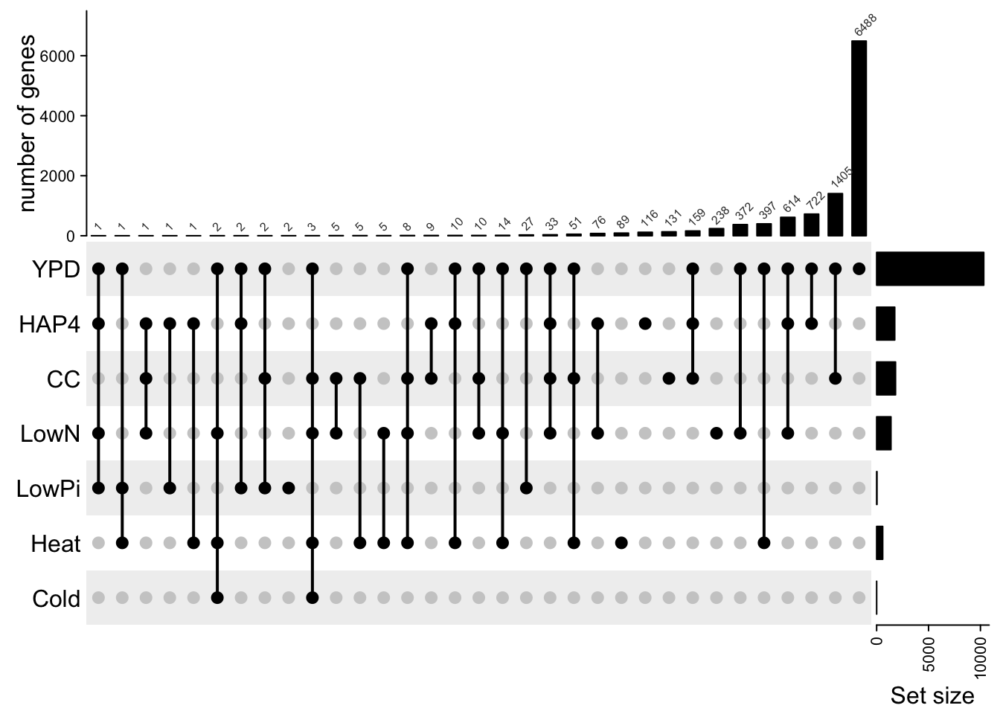
YPD is majority unique connections, but that’s mainly because it has so many more than any environment-specific network
all environments except Cold have at least one unique regulator-target pair (Cold only has 2 regulators and 3 targets total)
Note: here is where we could remove env-specific regulatory connections from YPD, if that is deemed appropriate. Because genes have semi-overlapping environmental conditions in which they are active, it feels more biologically meaningful to retain that same partial overlap in their regulatory connections
Visualizing environment-specific networks
Given the adjacency matrix, outputs the connected portion of the graph in igraph format, good for plotting:
getConnectedGraph <- function(.adj) {
colnames(.adj) <- left_join(tibble(systematic = colnames(.adj)),
yeastract_lookup, by = "systematic") |>
select(common) |> pull()
rownames(.adj) <- left_join(tibble(systematic = rownames(.adj)),
yeastract_lookup, by = "systematic") |>
select(common) |> pull()
regnames <- rownames(.adj)[rowSums(.adj) > 0]
g <- graph_from_adjacency_matrix(.adj)
sub_g <- subgraph(g, which(igraph::degree(g) > 0))
V(sub_g)$isHub <- names(V(sub_g)) %in% regnames
V(sub_g)$vertex_size <- if_else(V(sub_g)$isHub, true = 7, false = 1)
V(sub_g)$color <- if_else(V(sub_g)$isHub, true = "steelblue", false = "orange")
V(sub_g)$vertex_label <- if_else(V(sub_g)$isHub, true = names(V(sub_g)), false = "")
return(sub_g)
}Visualizations of each environment-specific network, randomly downsampled if they have too many connections for igraph to handle
# plotting each environment
# downsampling to 2500 (there are 3500ish features in ypd) because igraph seems to have a problem plotting
# plot(getConnectedGraph(regmats$YPD)) # better as a heatmap
conn_thresh <- 1500
down_thresh <- 2500
for (r in setdiff(names(regmats), "YPD")) {
mat <- regmats[[r]]
if (sum(mat) > conn_thresh) {
downsample_idxs <- sample(c(1:nrow(mat)), down_thresh, replace = FALSE)
g <- getConnectedGraph(mat[downsample_idxs, downsample_idxs])
}
else {
g <- getConnectedGraph(mat)
}
# version that makes the actual plot, commented out once it is run once, b/c igraph randomizes plot each time:
# pdf(paste0("paper_figures/Yeastract/",
# r, ".pdf"),
# width = 7, height = 7)
# plot(g, vertex.size = V(g)$vertex_size,
# vertex.label = V(g)$vertex_label,
# edge.arrow.size = 0.1,
# main = r, layout = layout_nicely(g),
# frame = TRUE)
# dev.off()
# version for website:
plot(g, vertex.size = V(g)$vertex_size,
vertex.label = V(g)$vertex_label,
edge.arrow.size = 0.1,
main = r, layout = layout_nicely(g),
frame = TRUE)
}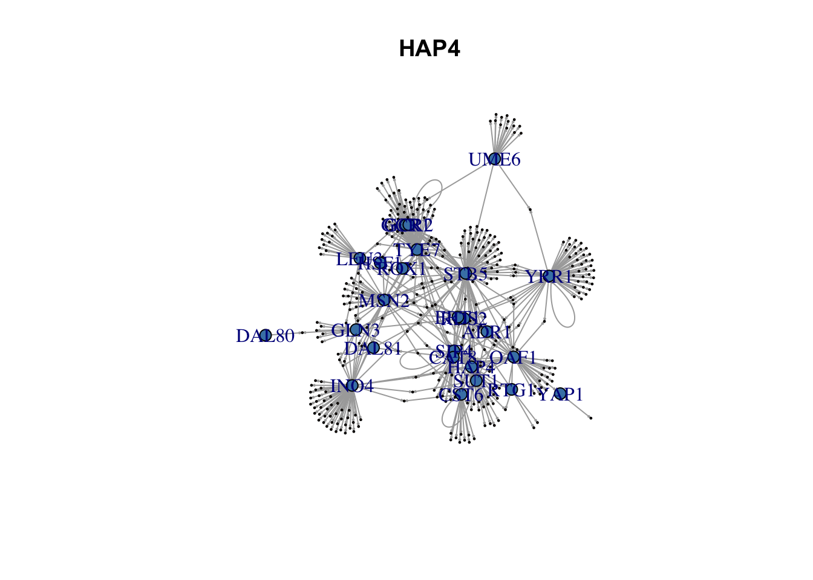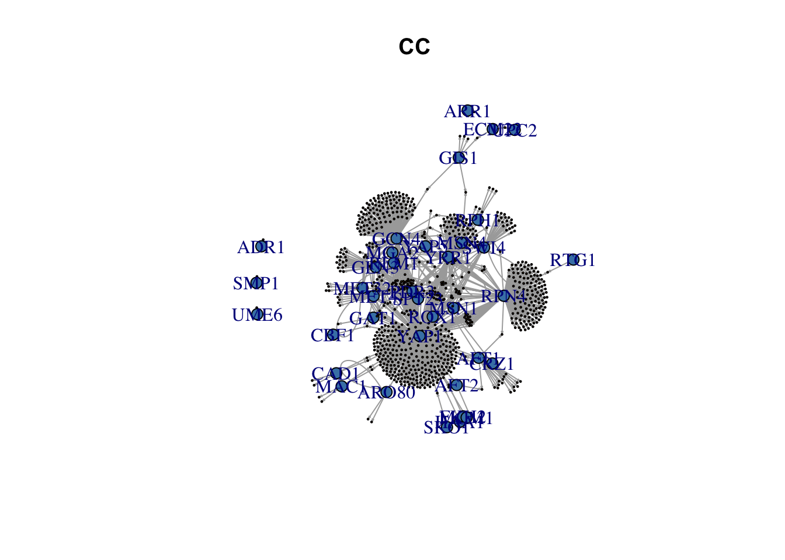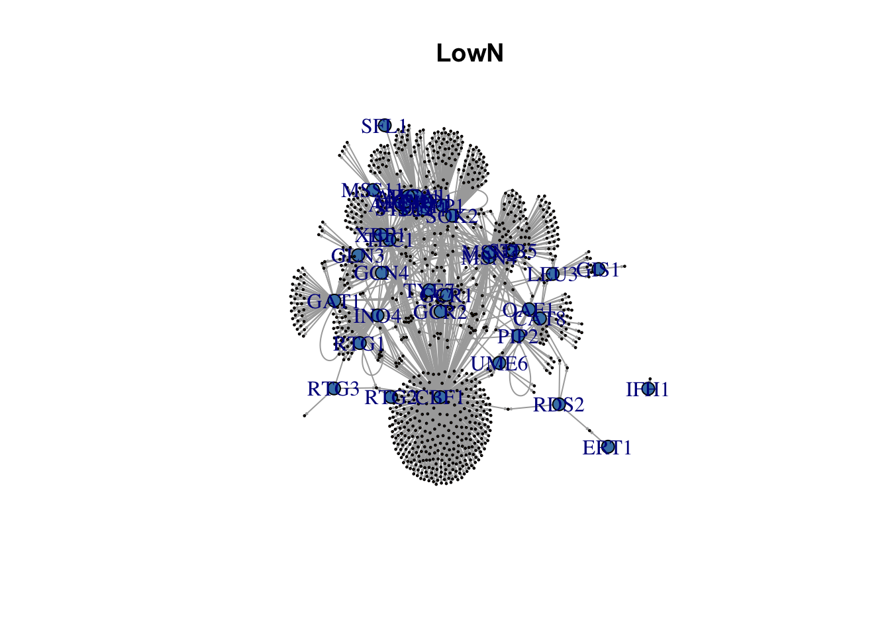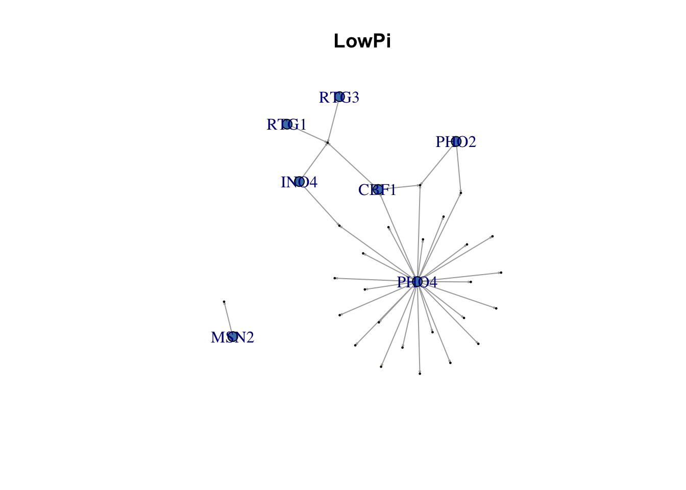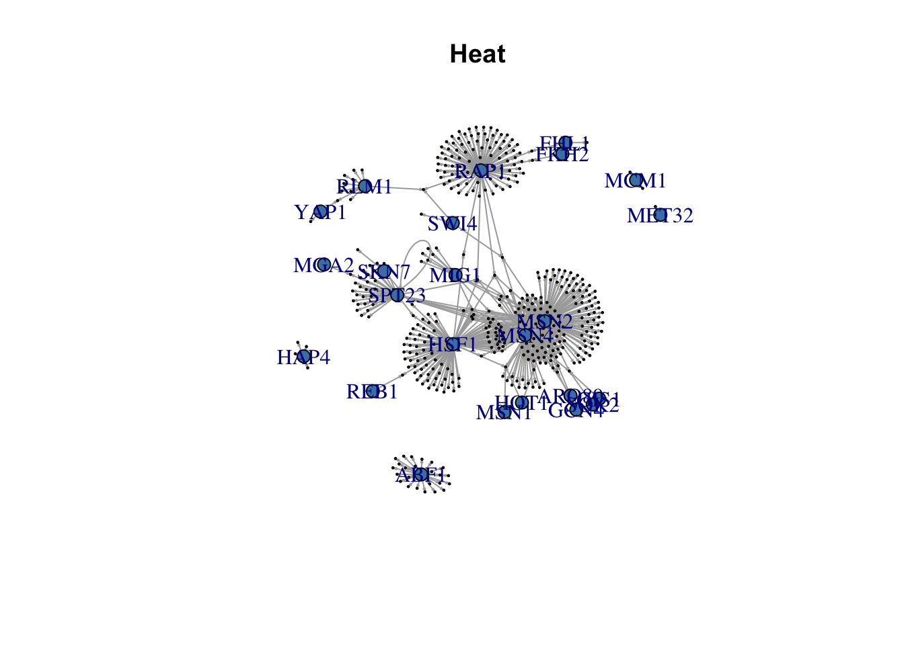
Number of regulators and targets in each environmental network
# getting numbers for figure
for (e in ExperimentNames) {
cat(e, "nTargets:", sum(colSums(regmats[[e]]) != 0),
"nRegulators:", sum(rowSums(regmats[[e]]) != 0), "\n")
}## HAP4 nTargets: 1121 nRegulators: 34
## CC nTargets: 1270 nRegulators: 56
## LowN nTargets: 952 nRegulators: 37
## LowPi nTargets: 27 nRegulators: 8
## Heat nTargets: 419 nRegulators: 24
## Cold nTargets: 3 nRegulators: 2Supplementary figure: stacked barplots
Proportions of incoming and outgoing connections by plasticity group. Barplots with mutually exclusive plasticity groups:
- conserved plastic
- conserved static
- Scer-unique plastic
- Spar-unique plastic
- plasticity reversal (YPD and env-specific connections in each)
# helper for plotting function
getPlasticityGroup <- function(.cer, .par) {
if (.cer == 0 & .par == 0) {
return("conserved static")
}
if (.cer == .par) {
return("conserved plastic")
}
if (.cer == 0) {
return("Spar-unique")
}
if (.par == 0) {
return("Scer-unique")
}
else {
return("reversal")
}
}Plotting (very large amount of dplyr-ing the plot dataframe):
plotdf <- map(ExperimentNames, \(.e) {
expr_genes <- filter(finaldf, experiment == .e) |>
select(gene_name) |> pull() |>
intersect(colnames(regmats$YPD))
tibble(gene_name = expr_genes,
in_degree_e = colSums(regmats[[.e]][expr_genes, expr_genes]),
in_degree_YPD = colSums(regmats$YPD[expr_genes, expr_genes]),
out_degree_e = rowSums(regmats[[.e]][expr_genes, expr_genes]),
out_degree_YPD = rowSums(regmats$YPD[expr_genes, expr_genes])) |>
right_join(filter(finaldf, experiment == .e),
by = "gene_name")
}) |> purrr::reduce(.f = bind_rows)
# NA degree means gene isn't in regmat
# (likely never had any connections in any environment),
# so setting these to a degree of 0
plotdf$in_degree_e[is.na(plotdf$in_degree_e)] <- 0
plotdf$in_degree_YPD[is.na(plotdf$in_degree_YPD)] <- 0
plotdf$out_degree_e[is.na(plotdf$out_degree_e)] <- 0
plotdf$out_degree_YPD[is.na(plotdf$out_degree_YPD)] <- 0
# getting plasticity group by gene/environment
plotdf$plasticity <- map2(plotdf$cer, plotdf$par, getPlasticityGroup) |> unlist()
totalsdf <- plotdf |> group_by(experiment) |>
dplyr::summarise(total_in_e = sum(in_degree_e),
total_in_YPD = sum(in_degree_YPD),
total_out_e = sum(out_degree_e),
total_out_YPD = sum(out_degree_YPD),
total_genes = n())
plotdf <- plotdf |> group_by(experiment, plasticity) |>
dplyr::summarise(n_in_e = sum(in_degree_e),
n_in_YPD = sum(in_degree_YPD),
n_out_e = sum(out_degree_e),
n_out_YPD = sum(out_degree_YPD),
n_genes = n()) |>
left_join(y = totalsdf,
by = "experiment") |>
mutate(prop_in_e = n_in_e/total_in_e,
prop_in_YPD = n_in_YPD/total_in_YPD,,
prop_out_e = n_out_e/total_out_e,
prop_out_YPD = n_out_YPD/total_out_YPD,
prop_genes = n_genes/total_genes) |>
pivot_longer(cols = c("prop_in_e", "prop_in_YPD", "prop_genes",
"prop_out_e", "prop_out_YPD"),
names_to = "prop_type", values_to = "proportion") |>
mutate(degree = if_else(grepl("in", prop_type),
true = "in",
false = if_else(grepl("out", prop_type),
true = "out",
false = "genes")),
network = if_else(grepl("YPD", prop_type),
true = "YPD",
false = if_else(grepl("genes", prop_type),
true = "genes",
false = "env")))## `summarise()` has grouped output by 'experiment'. You
## can override using the `.groups` argument.totalsdf <- pivot_longer(totalsdf,
cols = c("total_in_e", "total_in_YPD",
"total_out_e", "total_out_YPD",
"total_genes"),
names_to = "prop_type", values_to = "n") |>
mutate(degree = if_else(grepl("in", prop_type),
true = "in",
false = if_else(grepl("out", prop_type),
true = "out",
false = "genes")),
network = if_else(grepl("YPD", prop_type),
true = "YPD",
false = if_else(grepl("genes", prop_type),
true = "genes",
false = "env")))
plotdf$network <- factor(plotdf$network, levels = c("genes", "YPD", "env"),
labels = c("number of genes", "un-stressed network\nconnections",
"environment-specific network\nconnections"))
totalsdf$network <- factor(totalsdf$network, levels = c("genes", "YPD", "env"),
labels = c("number of genes", "un-stressed network\nconnections",
"environment-specific network\nconnections"))
# in degree
p_in <- ggplot(filter(plotdf, degree %in% c("in", "genes")), aes(x = network, y = proportion)) +
geom_bar(aes(fill = plasticity), position = "stack", stat = "identity") +
geom_text(data = filter(totalsdf, degree %in% c("in", "genes")), aes(x = network, label = n), y = 1.1) +
ylim(c(0, 1.1)) +
scale_fill_discrete(limits = colordf[colordf$scheme == "plasticity",]$limits,
type = colordf[colordf$scheme == "plasticity",]$type) +
ylab("%") +
xlab("") +
ggtitle("incoming connections") +
theme_classic() +
theme(axis.text.x = element_text(angle = 90, hjust = 0.95, vjust = 0.2)) +
facet_wrap(~factor(experiment, levels = ExperimentNames, labels = LongExperimentNames))
# out degree
p_out <- ggplot(filter(plotdf, degree %in% c("out", "genes")), aes(x = network, y = proportion)) +
geom_bar(aes(fill = plasticity), position = "stack", stat = "identity") +
geom_text(data = filter(totalsdf, degree %in% c("out", "genes")), aes(x = network, label = n), y = 1.1) +
ylim(c(0, 1.1)) +
scale_fill_discrete(limits = colordf[colordf$scheme == "plasticity",]$limits,
type = colordf[colordf$scheme == "plasticity",]$type) +
ylab("%") +
xlab("") +
ggtitle("outgoing connections") +
theme_classic() +
theme(axis.text.x = element_text(angle = 90, hjust = 0.95, vjust = 0.2)) +
facet_wrap(~factor(experiment, levels = ExperimentNames, labels = LongExperimentNames))
# plotting
ggarrange(p_in, p_out, nrow = 1, ncol = 2, common.legend = TRUE, legend = "bottom")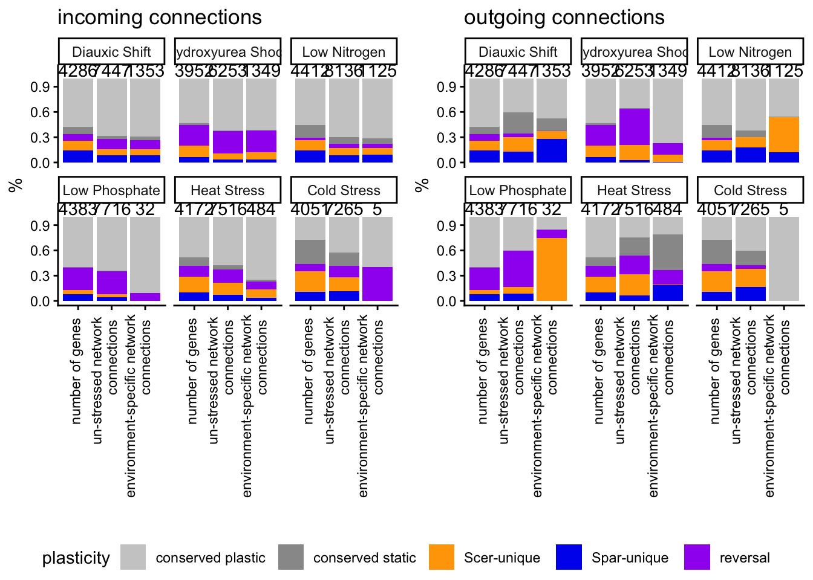
pdf("paper_figures/Supplement/propConnectionsBars.pdf",
width = 9, height = 7)
ggarrange(p_in, p_out, nrow = 1, ncol = 2, common.legend = TRUE, legend = "bottom")
dev.off()## quartz_off_screen
## 2Waffle plots of the number of targets per regulator
In the stacked bars, we saw that regulatory out degree had very unequal representation of plasticity groups, particularly an over-representation of single-species plasticiy connections Here we want to compare regulators and their regulons from each plasticity group by visualizing first the regulator expression across environments and then their regulon (or at least the most common plasticity pattern)
Note: waffle package uses plyr, which superseeds dplyr::summarise, causing errors if we don’t unload it once the waffle plots are done
library(waffle)
# first how many regulators from each environment are from each plasticity group?
# and how many connections do each of them have?
tfdf <- map(ExperimentNames, \(.e) {
expr_genes <- filter(finaldf, experiment == .e) |>
select(gene_name) |> pull() |>
intersect(colnames(regmats$YPD))
tibble(gene_name = expr_genes,
out_degree_e = rowSums(regmats[[.e]][expr_genes, expr_genes])) |>
right_join(filter(finaldf, experiment == .e),
by = "gene_name")
}) |> purrr::reduce(.f = bind_rows)
tfdf$out_degree_e[is.na(tfdf$out_degree_e)] <- 0
tfdf <- tfdf |> filter(out_degree_e != 0)
tfdf$plasticity <- map2(tfdf$cer, tfdf$par, getPlasticityGroup) |> unlist()
plotdf <- tfdf |>
dplyr::count(plasticity, experiment, out_degree_e, gene_name) |>
arrange(experiment, desc(out_degree_e))
#arrange(experiment, plasticity)
# manually setting x and y of out degree labels
# cause waffle plot doesn't currently allow labels
# NOTE: Flip=TRUE needs to be set on geom_waffle for this to work
nrows <- 5
ncols <- max(table(plotdf$experiment))/nrows
plotdf$x <- ((c(1:nrow(plotdf)) - rank(plotdf$experiment, ties.method = "min")) %% nrows) + 1
plotdf$y <- map(as.numeric(table(plotdf$experiment)), \(x) {
full_vec <- sapply(c(1:ncols), \(i) {rep(i, times = nrows)}) |> c()
return(full_vec[c(1:x)])
}) |> unlist()
p <- ggplot(plotdf, aes(fill = plasticity, values = n)) +
geom_waffle(n_rows = nrows,
size = 1,
colour = "white",
flip = TRUE) +
geom_text(aes(x = x, y = y, label = out_degree_e), color = "white") +
scale_fill_discrete(
type = colordf[colordf$scheme == "plasticity",]$type,
limits = colordf[colordf$scheme == "plasticity",]$limits) +
facet_wrap(~factor(experiment, levels = ExperimentNames, labels = LongExperimentNames),
nrow = 1) +
theme_classic() +
theme(legend.position = "none",
axis.ticks = element_blank(),
axis.text = element_blank()) +
xlab("") +
ylab("") +
ggtitle("targets per regulator")
pdf("paper_figures/Yeastract/regulator_waffle.pdf",
width = 10.5, height = 2.5)
p
dev.off()## quartz_off_screen
## 2### Also creating YPD waffle plot where genes are colored by their plasticity group in each environment
nTargets_thresh <- 21
# using a common set of genes in all environments, so regulators can be in the same
# order in each waffle plot, by desc(nTargets)
ypd_genes <- intersect(x = names(table(finaldf$gene_name))[table(finaldf$gene_name) == length(ExperimentNames)],
y = colnames(regmats$YPD))
ypddf <- map(ExperimentNames, \(.e) {
tibble(gene_name = ypd_genes,
out_degree_ypd = rowSums(regmats[["YPD"]][ypd_genes,
ypd_genes])) |>
right_join(filter(finaldf, experiment == .e & gene_name %in% ypd_genes),
by = "gene_name")
}) |> purrr::reduce(.f = bind_rows)
ypddf$out_degree_ypd[is.na(ypddf$out_degree_ypd)] <- 0
ypddf <- ypddf |> filter(out_degree_ypd > nTargets_thresh) # filtering out lowly connected regulators
table(ypddf$experiment) # should still have same regulator set across environments##
## CC Cold HAP4 Heat LowN LowPi
## 36 36 36 36 36 36ypddf$plasticity <- map2(ypddf$cer, ypddf$par, getPlasticityGroup) |> unlist()
plotdf <- ypddf |>
dplyr::count(plasticity, experiment, out_degree_ypd, gene_name) |>
arrange(experiment, desc(out_degree_ypd))
# organizing count labels
nrows <- 6
ncols <- ceiling(max(table(plotdf$experiment))/nrows)
plotdf$x <- ((c(1:nrow(plotdf)) - rank(plotdf$experiment, ties.method = "min")) %% nrows) + 1
plotdf$y <- map(as.numeric(table(plotdf$experiment)), \(x) {
full_vec <- sapply(c(1:ncols), \(i) {
rep(i, times = nrows)
}) |> c()
return(full_vec[c(1:x)])
}) |> unlist()
#arrange(experiment, plasticity)
p <- ggplot(plotdf, aes(fill = plasticity, values = n)) +
geom_waffle(n_rows = nrows,
size = 1,
colour = "white",
flip = TRUE) +
geom_text(aes(x = x, y = y, label = out_degree_ypd), color = "white") +
scale_fill_discrete(
type = colordf[colordf$scheme == "plasticity",]$type,
limits = colordf[colordf$scheme == "plasticity",]$limits) +
facet_wrap(~factor(experiment, levels = ExperimentNames, labels = LongExperimentNames),
nrow = 1) +
theme_classic() +
theme(legend.position = "none",
axis.ticks = element_blank(),
axis.text = element_blank()) +
xlab("") +
ylab("") +
ggtitle("targets per regulator (unstressed networks)")
pdf("paper_figures/Yeastract/regulator_waffle_YPD.pdf",
width = 11.5, height = 2.5)
p
dev.off()## quartz_off_screen
## 2# unloading waffle
detach("package:waffle", unload=TRUE)Example regulator-regulon expression
Example I: PHO4 regulon conserved in LowPi, diverged in HAP4
e <- "LowPi"
e2 <- "HAP4"
# regulator
reg_idx <- tfdf |> filter(experiment == e) |>
filter(out_degree_e == 24) |>
select(gene_name) |> pull()
regname <- filter(yeastract_lookup, systematic == reg_idx) |> select(common) |> pull()
regname # Pho4## [1] "PHO4"p_regulator <- annotate_figure(plotGenes(.gene_idxs = reg_idx, .quartet = TRUE,
.normalization = "log2",
.plotlims = c(4.5, 10),
.experiment_name = e), top = regname) ## `summarise()` has grouped output by 'group_id',
## 'gene_name', 'experiment'. You can override using the
## `.groups` argument.
## `summarise()` has grouped output by 'time_point_num',
## 'experiment'. You can override using the `.groups`
## argument.
## Adding missing grouping variables: `time_point_num`,
## `experiment`
## Adding missing grouping variables: `time_point_num`,
## `experiment`## Warning in max(ids, na.rm = TRUE): no non-missing
## arguments to max; returning -Inf
## Warning in max(ids, na.rm = TRUE): no non-missing
## arguments to max; returning -Inf
## Warning in max(ids, na.rm = TRUE): no non-missing
## arguments to max; returning -Inf
## Warning in max(ids, na.rm = TRUE): no non-missing
## arguments to max; returning -Inf# regulon
regulon_idxs <- filter(regdf, environment == e & regulator == reg_idx) |>
select(target) |> pull() |>
intersect(y = finaldf[finaldf$experiment == e,]$gene_name)
p_regulon <- annotate_figure(plotGenes(.gene_idxs = regulon_idxs, .normalization = "scale",
.experiment_name = e,
.quartet = TRUE),
top = paste0(regname, " regulon (", length(regulon_idxs), " genes)"))## `summarise()` has grouped output by 'group_id',
## 'gene_name', 'experiment'. You can override using the
## `.groups` argument.
## `summarise()` has grouped output by 'time_point_num',
## 'experiment'. You can override using the `.groups`
## argument.
## Adding missing grouping variables: `time_point_num`,
## `experiment`
## Adding missing grouping variables: `time_point_num`,
## `experiment`p_home <- annotate_figure(ggarrange(p_regulator, p_regulon, nrow = 2, ncol = 1),
top = "Low Phosphate")
# Diauxic Shift expression
p_regulator <- annotate_figure(plotGenes(.gene_idxs = reg_idx, .quartet = TRUE,
.normalization = "log2",
.plotlims = c(4.5, 10),
.experiment_name = e2), top = regname) ## `summarise()` has grouped output by 'group_id',
## 'gene_name', 'experiment'. You can override using the
## `.groups` argument.
## `summarise()` has grouped output by 'time_point_num',
## 'experiment'. You can override using the `.groups`
## argument.
## Adding missing grouping variables: `time_point_num`,
## `experiment`
## Adding missing grouping variables: `time_point_num`,
## `experiment`## Warning in max(ids, na.rm = TRUE): no non-missing
## arguments to max; returning -Inf
## Warning in max(ids, na.rm = TRUE): no non-missing
## arguments to max; returning -Inf
## Warning in max(ids, na.rm = TRUE): no non-missing
## arguments to max; returning -Inf
## Warning in max(ids, na.rm = TRUE): no non-missing
## arguments to max; returning -Inf# regulon
regulon_idxs <- filter(regdf, environment == e & regulator == reg_idx) |>
select(target) |> pull() |>
intersect(y = finaldf[finaldf$experiment == e,]$gene_name)
p_regulon <- annotate_figure(plotGenes(.gene_idxs = regulon_idxs, .normalization = "scale",
.experiment_name = e2,
.quartet = TRUE),
top = paste0(regname, " regulon (", length(regulon_idxs), " genes)"))## `summarise()` has grouped output by 'group_id',
## 'gene_name', 'experiment'. You can override using the
## `.groups` argument.
## `summarise()` has grouped output by 'time_point_num',
## 'experiment'. You can override using the `.groups`
## argument.
## Adding missing grouping variables: `time_point_num`,
## `experiment`
## Adding missing grouping variables: `time_point_num`,
## `experiment`p_divEnv <- annotate_figure(ggarrange(p_regulator, p_regulon, nrow = 2, ncol = 1),
top = "Diauxic Shift")
ggarrange(p_home, p_divEnv, nrow = 1, ncol = 2)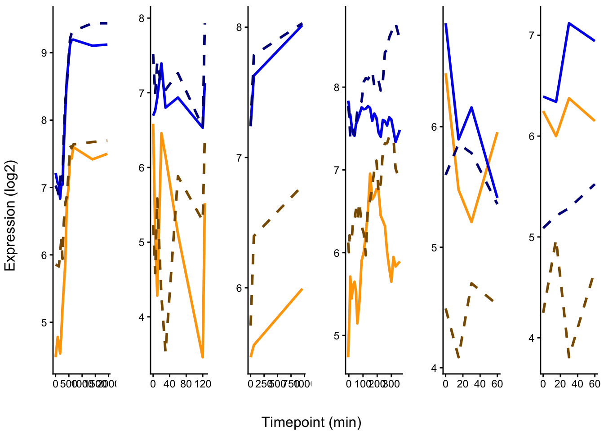
pdf(paste0("paper_figures/Yeastract/", regname, ".pdf"),
width = 6, height = 6)
ggarrange(p_home, p_divEnv, nrow = 1, ncol = 2)
dev.off()## quartz_off_screen
## 2Example II: GCN4 conserved in HU Shock, diverged in Heat and LowPi
e <- "CC"
e2 <- "Heat"
reglims <- c(8, 12)
# regulator
reg_idx <- tfdf |> filter(experiment == e) |>
filter(out_degree_e == 163) |>
select(gene_name) |> pull()
regname <- filter(yeastract_lookup, systematic == reg_idx) |> select(common) |> pull()
regname # GCN4## [1] "GCN4"p_regulator <- annotate_figure(plotGenes(.gene_idxs = reg_idx, .quartet = TRUE,
.normalization = "log2",
.plotlims = reglims,
.experiment_name = e), top = regname) ## `summarise()` has grouped output by 'group_id',
## 'gene_name', 'experiment'. You can override using the
## `.groups` argument.
## `summarise()` has grouped output by 'time_point_num',
## 'experiment'. You can override using the `.groups`
## argument.
## Adding missing grouping variables: `time_point_num`,
## `experiment`
## Adding missing grouping variables: `time_point_num`,
## `experiment`## Warning in max(ids, na.rm = TRUE): no non-missing
## arguments to max; returning -Inf
## Warning in max(ids, na.rm = TRUE): no non-missing
## arguments to max; returning -Inf
## Warning in max(ids, na.rm = TRUE): no non-missing
## arguments to max; returning -Inf
## Warning in max(ids, na.rm = TRUE): no non-missing
## arguments to max; returning -Inf# regulon
regulon_idxs <- filter(regdf, environment == e & regulator == reg_idx) |>
select(target) |> pull() |>
intersect(y = finaldf[finaldf$experiment == e,]$gene_name)
p_regulon <- annotate_figure(plotGenes(.gene_idxs = regulon_idxs, .normalization = "scale",
.experiment_name = e,
.quartet = TRUE),
top = paste0(regname, " regulon (", length(regulon_idxs), " genes)"))## `summarise()` has grouped output by 'group_id',
## 'gene_name', 'experiment'. You can override using the
## `.groups` argument.
## `summarise()` has grouped output by 'time_point_num',
## 'experiment'. You can override using the `.groups`
## argument.
## Adding missing grouping variables: `time_point_num`,
## `experiment`
## Adding missing grouping variables: `time_point_num`,
## `experiment`p_home <- annotate_figure(ggarrange(p_regulator, p_regulon, nrow = 2, ncol = 1),
top = LongExperimentNames[which(ExperimentNames == e)])
# Other environment expression
p_regulator <- annotate_figure(plotGenes(.gene_idxs = reg_idx, .quartet = TRUE,
.normalization = "log2",
.plotlims = reglims,
.experiment_name = e2), top = regname) ## `summarise()` has grouped output by 'group_id',
## 'gene_name', 'experiment'. You can override using the
## `.groups` argument.
## `summarise()` has grouped output by 'time_point_num',
## 'experiment'. You can override using the `.groups`
## argument.
## Adding missing grouping variables: `time_point_num`,
## `experiment`
## Adding missing grouping variables: `time_point_num`,
## `experiment`## Warning in max(ids, na.rm = TRUE): no non-missing
## arguments to max; returning -Inf
## Warning in max(ids, na.rm = TRUE): no non-missing
## arguments to max; returning -Inf
## Warning in max(ids, na.rm = TRUE): no non-missing
## arguments to max; returning -Inf
## Warning in max(ids, na.rm = TRUE): no non-missing
## arguments to max; returning -Inf# regulon
regulon_idxs <- filter(regdf, environment == e & regulator == reg_idx) |>
select(target) |> pull() |>
intersect(y = finaldf[finaldf$experiment == e,]$gene_name)
p_regulon <- annotate_figure(plotGenes(.gene_idxs = regulon_idxs, .normalization = "scale",
.experiment_name = e2,
.quartet = TRUE),
top = paste0(regname, " regulon (", length(regulon_idxs), " genes)"))## `summarise()` has grouped output by 'group_id',
## 'gene_name', 'experiment'. You can override using the
## `.groups` argument.
## `summarise()` has grouped output by 'time_point_num',
## 'experiment'. You can override using the `.groups`
## argument.
## Adding missing grouping variables: `time_point_num`,
## `experiment`
## Adding missing grouping variables: `time_point_num`,
## `experiment`p_divEnv <- annotate_figure(ggarrange(p_regulator, p_regulon, nrow = 2, ncol = 1),
top = LongExperimentNames[which(ExperimentNames == e2)])
ggarrange(p_home, p_divEnv, nrow = 1, ncol = 2)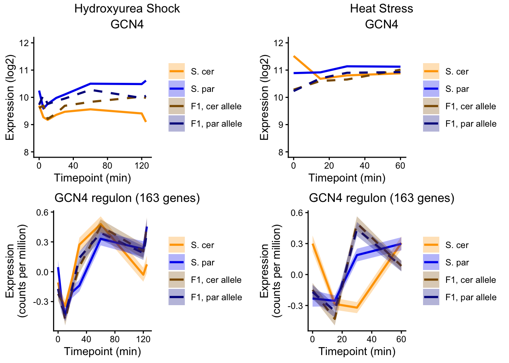
pdf(paste0("paper_figures/Yeastract/", regname, ".pdf"),
width = 6, height = 6)
ggarrange(p_home, p_divEnv, nrow = 1, ncol = 2)
dev.off()## quartz_off_screen
## 2Example III: HSF1 regulon conserved in Heat
e <- "Heat"
e2 <- "LowPi"
reglims <- c(5, 8)
# regulator
reg_idx <- tfdf |> filter(experiment == e) |>
filter(out_degree_e == 89) |>
select(gene_name) |> pull()
regname <- filter(yeastract_lookup, systematic == reg_idx) |> select(common) |> pull()
regname # HSF1## [1] "HSF1"p_regulator <- annotate_figure(plotGenes(.gene_idxs = reg_idx, .quartet = TRUE,
.normalization = "log2",
.plotlims = reglims,
.experiment_name = e), top = regname) ## `summarise()` has grouped output by 'group_id',
## 'gene_name', 'experiment'. You can override using the
## `.groups` argument.
## `summarise()` has grouped output by 'time_point_num',
## 'experiment'. You can override using the `.groups`
## argument.
## Adding missing grouping variables: `time_point_num`,
## `experiment`
## Adding missing grouping variables: `time_point_num`,
## `experiment`## Warning in max(ids, na.rm = TRUE): no non-missing
## arguments to max; returning -Inf
## Warning in max(ids, na.rm = TRUE): no non-missing
## arguments to max; returning -Inf
## Warning in max(ids, na.rm = TRUE): no non-missing
## arguments to max; returning -Inf
## Warning in max(ids, na.rm = TRUE): no non-missing
## arguments to max; returning -Inf# regulon
regulon_idxs <- filter(regdf, environment == e & regulator == reg_idx) |>
select(target) |> pull() |>
intersect(y = finaldf[finaldf$experiment == e,]$gene_name)
p_regulon <- annotate_figure(plotGenes(.gene_idxs = regulon_idxs, .normalization = "scale",
.experiment_name = e,
.quartet = TRUE),
top = paste0(regname, " regulon (", length(regulon_idxs), " genes)"))## `summarise()` has grouped output by 'group_id',
## 'gene_name', 'experiment'. You can override using the
## `.groups` argument.
## `summarise()` has grouped output by 'time_point_num',
## 'experiment'. You can override using the `.groups`
## argument.
## Adding missing grouping variables: `time_point_num`,
## `experiment`
## Adding missing grouping variables: `time_point_num`,
## `experiment`p_home <- annotate_figure(ggarrange(p_regulator, p_regulon, nrow = 2, ncol = 1),
top = LongExperimentNames[which(ExperimentNames == e)])
# Diauxic Shift expression
p_regulator <- annotate_figure(plotGenes(.gene_idxs = reg_idx, .quartet = TRUE,
.normalization = "log2",
.plotlims = reglims,
.experiment_name = e2), top = regname) ## `summarise()` has grouped output by 'group_id',
## 'gene_name', 'experiment'. You can override using the
## `.groups` argument.
## `summarise()` has grouped output by 'time_point_num',
## 'experiment'. You can override using the `.groups`
## argument.
## Adding missing grouping variables: `time_point_num`,
## `experiment`
## Adding missing grouping variables: `time_point_num`,
## `experiment`## Warning in max(ids, na.rm = TRUE): no non-missing
## arguments to max; returning -Inf
## Warning in max(ids, na.rm = TRUE): no non-missing
## arguments to max; returning -Inf
## Warning in max(ids, na.rm = TRUE): no non-missing
## arguments to max; returning -Inf
## Warning in max(ids, na.rm = TRUE): no non-missing
## arguments to max; returning -Inf# regulon
regulon_idxs <- filter(regdf, environment == e & regulator == reg_idx) |>
select(target) |> pull() |>
intersect(y = finaldf[finaldf$experiment == e,]$gene_name)
p_regulon <- annotate_figure(plotGenes(.gene_idxs = regulon_idxs, .normalization = "scale",
.experiment_name = e2,
.quartet = TRUE),
top = paste0(regname, " regulon (", length(regulon_idxs), " genes)"))## `summarise()` has grouped output by 'group_id',
## 'gene_name', 'experiment'. You can override using the
## `.groups` argument.
## `summarise()` has grouped output by 'time_point_num',
## 'experiment'. You can override using the `.groups`
## argument.
## Adding missing grouping variables: `time_point_num`,
## `experiment`
## Adding missing grouping variables: `time_point_num`,
## `experiment`p_divEnv <- annotate_figure(ggarrange(p_regulator, p_regulon, nrow = 2, ncol = 1),
top = LongExperimentNames[which(ExperimentNames == e2)])
ggarrange(p_home, p_divEnv, nrow = 1, ncol = 2)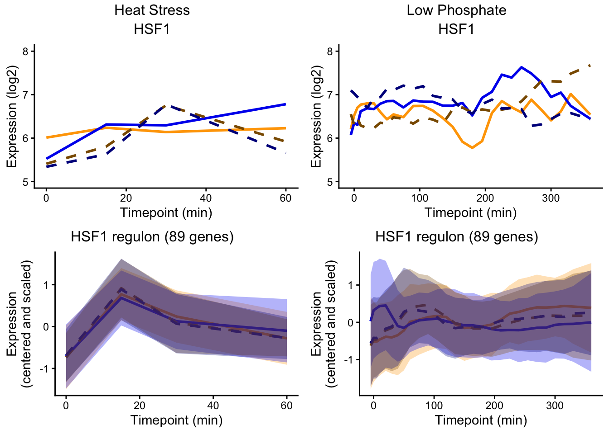
pdf(paste0("paper_figures/Yeastract/", regname, ".pdf"),
width = 6, height = 6)
ggarrange(p_home, p_divEnv, nrow = 1, ncol = 2)
dev.off()## quartz_off_screen
## 2Maybe supplemental figure: reversals have similar expression variance to conserved plasticity genes
# might be needed as a supplemental figure to point out that plasticity reveresals
# and conserved plasticity have the highest expression variation
# across both species and environments
load("data_files/Cleaned_Counts.RData")
cer_counts <- counts[, sample_info$organism == "cer" &
sample_info$experiment == "LowN"]
par_counts <- counts[, sample_info$organism == "par" &
sample_info$experiment == "LowN"]
plotdf <- bind_rows(x = tibble(gene_name = rownames(cer_counts),
mean_expr = rowMeans(cer_counts),
var_expr = rowVars(cer_counts),
organism = "cer"),
y = tibble(gene_name = rownames(par_counts),
mean_expr = rowMeans(par_counts),
var_expr = rowVars(par_counts),
organism = "par")) |>
pivot_wider(id_cols = "gene_name",
names_from = "organism",
values_from = c("mean_expr", "var_expr")) |>
right_join(finaldf, by = c("gene_name"))
plotdf$plasticityCategory <- map2(plotdf$cer, plotdf$par, getPlasticityGroup) |> unlist()
# Var/Mean by plasticity category, Scer
p1 <- ggplot(plotdf, aes(x = log2(mean_expr_cer))) +
geom_density(aes(fill = plasticityCategory), alpha = 0.5) +
theme_classic() +
scale_fill_discrete(limits = colordf[colordf$scheme == "plasticity",]$limits,
type = colordf[colordf$scheme == "plasticity",]$type) +
xlab("Mean Expression (log2)")
p2 <- ggplot(plotdf, aes(x = log2(var_expr_cer))) +
geom_density(aes(fill = plasticityCategory), alpha = 0.5) +
theme_classic() +
scale_fill_discrete(limits = colordf[colordf$scheme == "plasticity",]$limits,
type = colordf[colordf$scheme == "plasticity",]$type) +
xlab("Var Expression (log2)")
annotate_figure(ggarrange(p1, p2, common.legend = TRUE,
legend = "right", ncol = 1, nrow = 2), top = "Scer")## Warning: Removed 2 rows containing non-finite outside the
## scale range (`stat_density()`).
## Removed 2 rows containing non-finite outside the
## scale range (`stat_density()`).
## Removed 2 rows containing non-finite outside the
## scale range (`stat_density()`).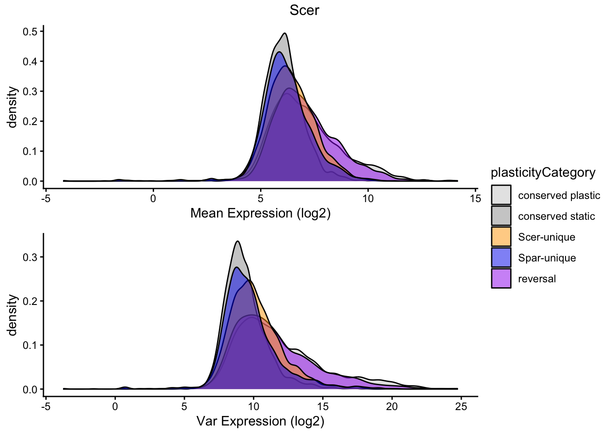
# Var/Mean by plasticity category, Spar
p1 <- ggplot(plotdf, aes(x = log2(mean_expr_par))) +
geom_density(aes(fill = plasticityCategory), alpha = 0.5) +
theme_classic() +
scale_fill_discrete(limits = colordf[colordf$scheme == "plasticity",]$limits,
type = colordf[colordf$scheme == "plasticity",]$type) +
xlab("Mean Expression (log2)")
p2 <- ggplot(plotdf, aes(x = log2(var_expr_par))) +
geom_density(aes(fill = plasticityCategory), alpha = 0.5) +
theme_classic() +
scale_fill_discrete(limits = colordf[colordf$scheme == "plasticity",]$limits,
type = colordf[colordf$scheme == "plasticity",]$type) +
xlab("Var Expression (log2)")
annotate_figure(ggarrange(p1, p2, common.legend = TRUE,
legend = "right", ncol = 1, nrow = 2), top = "Spar")## Warning: Removed 4 rows containing non-finite outside the
## scale range (`stat_density()`).## Warning: Removed 4 rows containing non-finite outside the
## scale range (`stat_density()`).
## Removed 4 rows containing non-finite outside the
## scale range (`stat_density()`).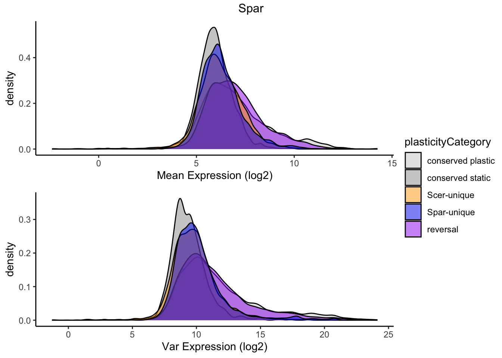